Zanone collar

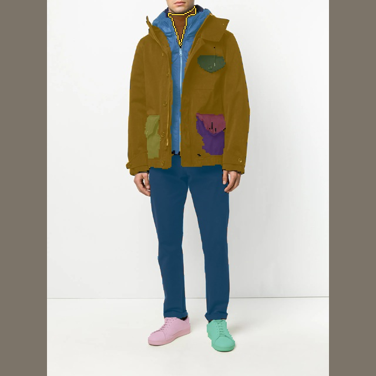
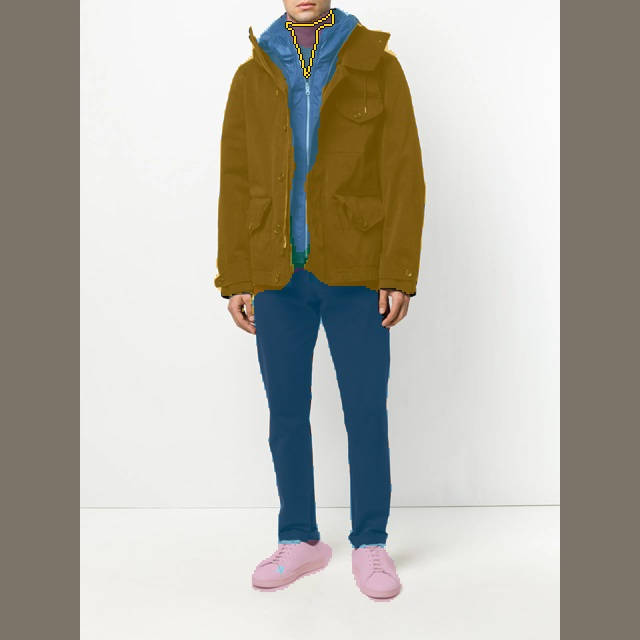
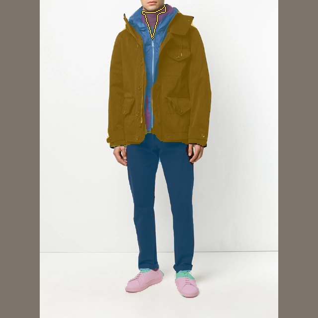
Starting head IoU: 0.233 · Control · 1,000 IoU: 0.010 · Structured · 1,000 IoU: 0.000 · Selected checkpoint IoU: 0.000


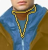
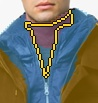
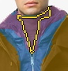
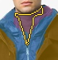
Training finished — quality gates failed
Updated 2026-09-27 02:34 UTC · hard GPU stop Sep 26, 08:56 PM PDT. 18,511 training images / 490 validation images. Named cases remain held out. Automatic SAM3-derived supervision; no human annotations.
This run follows DETRDistill’s set-matching principle, adapted to masks. It adds supervision for keeping each garment together, separates different garment identities, and uses teacher-mask object priors during training. DETRDistill paper.
The control uses the same repaired targets, preserved initialization, optimizer and first 1,000 training batches, without the added relation/prior/intermediate losses. Later structured checkpoints have more training; only the 1,000-update comparison isolates the added losses at equal exposure.
Warm start verified on 35 images: zero changed label pixels in float32. Inference head: 11.80M parameters. Training-only prior adapter excluded from that count.
Promotion: none. Quality-pass status is false; checkpoint selection uses validation only. Named cases are for inspection.
Selected head on NVIDIA GeForce RTX 5090: median 6.31 ms, p95 6.98 ms. Cached GPU C-RADIO tokens + RGB to CPU 640px labels. Encoder time is excluded; this is not an end-to-end latency claim.
| Model | PQ ↑ | FG IoU ↑ | Hard recall ↑ | Small easy IoU ↑ | Splits ↓ | Merges ↓ | False seam fraction ↓ | Same-piece agreement ↑ | Cross-piece collision ↓ |
|---|---|---|---|---|---|---|---|---|---|
| Starting head | 0.368 | 0.741 | 0.000 | 0.862 | 1.298 | 1.404 | 0.392 | 0.640 | 0.219 |
| control · 1,000 updates | 0.292 | 0.797 | 0.052 | 0.748 | 1.937 | 1.567 | 0.379 | 0.683 | 0.192 |
| structured · 1,000 updates | 0.297 | 0.796 | 0.056 | 0.750 | 1.871 | 1.588 | 0.374 | 0.691 | 0.201 |
| Selected · 2,000 updates | 0.323 | 0.798 | 0.052 | 0.744 | 1.947 | 1.565 | 0.349 | 0.675 | 0.148 |
Colors align by one-to-one matching to the reference. Gold outlines identify the requested piece. These images are held out from training and checkpoint selection.



Starting head IoU: 0.233 · Control · 1,000 IoU: 0.010 · Structured · 1,000 IoU: 0.000 · Selected checkpoint IoU: 0.000





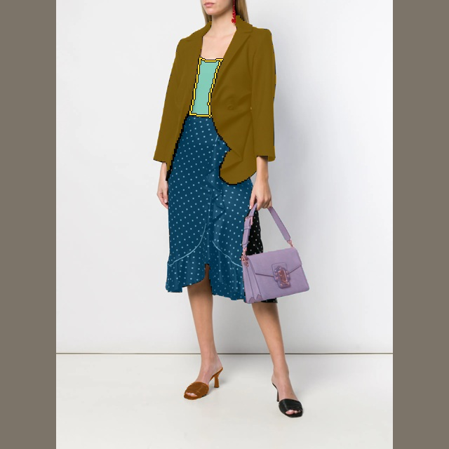
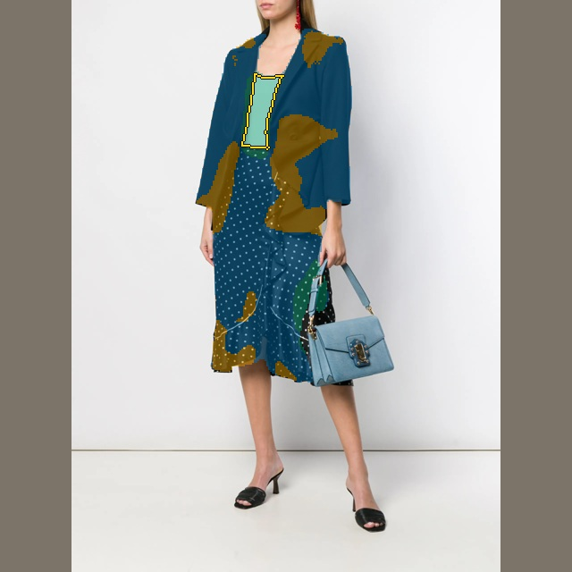
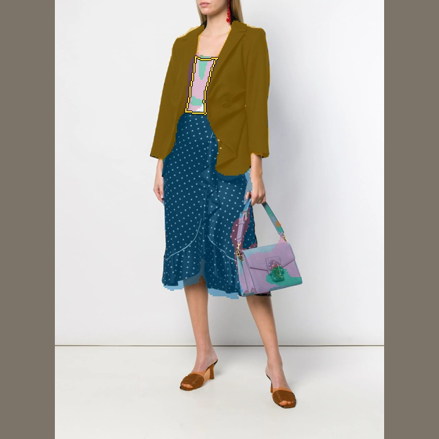
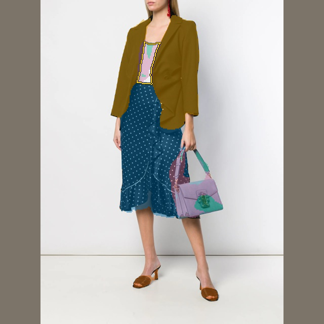
Starting head IoU: 0.489 · Control · 1,000 IoU: 0.230 · Structured · 1,000 IoU: 0.143 · Selected checkpoint IoU: 0.079


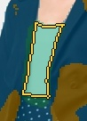
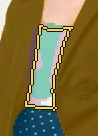
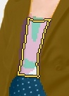
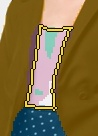

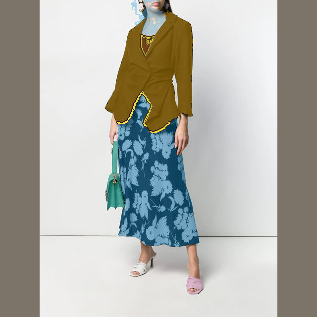

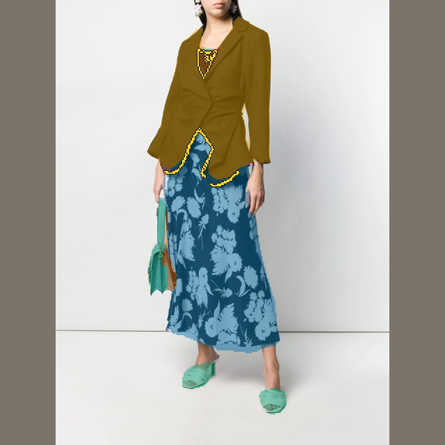
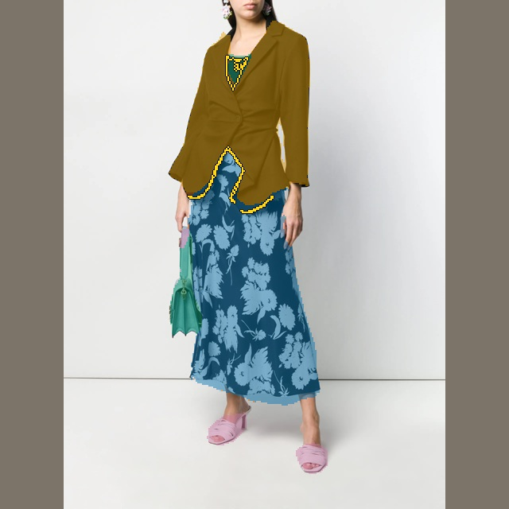
Starting head IoU: 0.282 · Control · 1,000 IoU: 0.163 · Structured · 1,000 IoU: 0.009 · Selected checkpoint IoU: 0.008


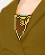
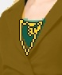

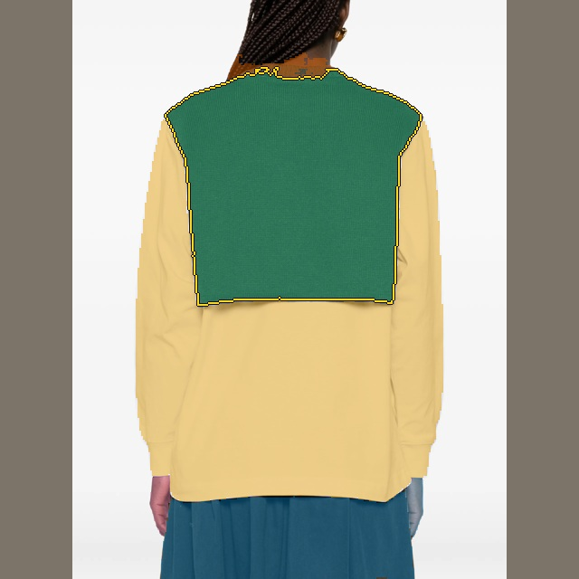

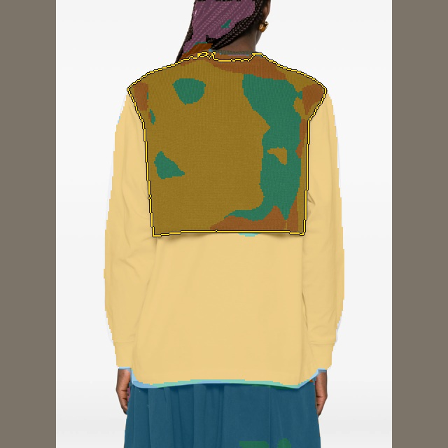
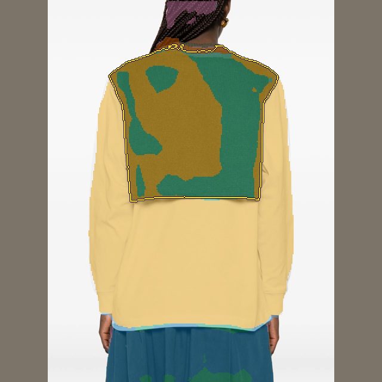
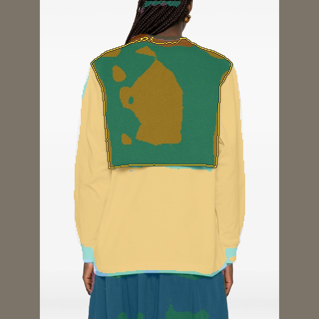
Starting head IoU: 0.553 · Control · 1,000 IoU: 0.221 · Structured · 1,000 IoU: 0.409 · Selected checkpoint IoU: 0.599
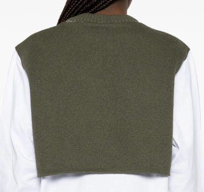
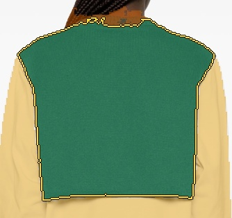

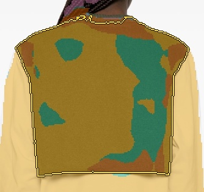
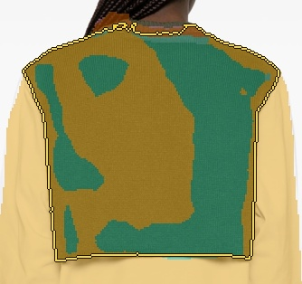
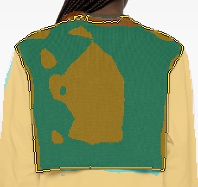
The quality estimator is trained against teacher mask overlap, not human truth. Exclusivity and foreground coverage are guaranteed by decoding; correctness of the boundaries must still pass evaluation. No RGB-only smoothing merges similarly textured garments.
Teacher references changed to remove the faulty target composition. Scores here should be compared within this run, not directly against the earlier composite-target table.
TARGETS.json · WARM_START.json · NAMED_REFERENCE.json · BASELINE.json · FINAL.json · BENCHMARK.json · validation_control.json · validation_structured.json · deadline.json · CODE.json · CODE_FINAL.json · CODE_5090.json · LOCAL_STARTED.json